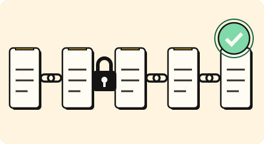

Business · 3 minutes
Proof built in
Auditors want proof: who did what, who can see what, and that data is protected.
Open this lesson
Prove it, do not promise it
Handling health, money or personal data comes with rules. An audit asks for evidence, not promises: a log nobody can edit, encryption with managed keys, one controlled place for personal data, tested backups, and a sign-in for every action.
Least privilege
A reporting service needs one capability. Try a leaked credential before and after restricting its permissions, and keep an audit trail of allowed actions.
Try the idea
An audit lands at noon. Add what the auditors will ask for.
Key numbers
- Keep an audit log
- ≈ 1 to 7 years. depends on the rule, approx.
- Test a backup restore
- ≈ every quarter. an untested backup is a hope, approx.
- Rotate keys
- ≈ every 90 days. approx.
Check your reasoning
Think through these questions before opening the lesson. In the game you can test the idea and compare your reasoning.
- What does an auditor ask for?
- Where do secrets belong?
- What is least privilege?
The key point
Build the proof in from the start; adding it after the audit is far harder.
Practise this idea
- Medium
Login and single sign-on
Employees and customers sign in to many apps through one account. Most of the day is quiet, then 9 am arrives and everyone signs in at once. Attackers also hammer the login with stolen passwords. Let real people in quickly and keep the rest out.
- Medium
Peer-to-peer wallet
People split dinner by sending each other money from their phones. A transfer takes money from one balance and adds it to another, and the sender must see the new balance right away. A flaky mobile connection often makes the app send the same transfer twice.
- Medium
Insurance claims
After a hailstorm, thousands of drivers file claims online, each with a handful of photos. The storm offer ends at 5 pm, so everyone files at the last minute. Every claim must be saved safely, and every customer gets a confirmation email.
- Hard
Bank ledger
You run the system of record for a regional bank: every deposit, withdrawal and card settlement is a posting that must be exact and permanent. Customers in two continents read balances all day, and regulators can ask for proof at any time. A bad day for you is a loss of even one posting.